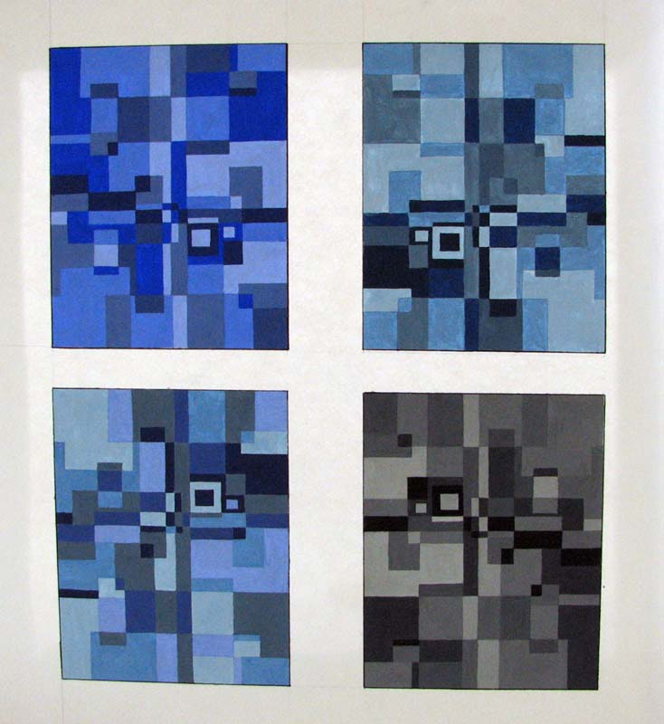

Монохромия в теплой, холодной и нейтральной гаммах. Ахроматическая цветовая композиция. Планшет 40х40 см
5
7
8

11
35
43
Полярная цветовая композиция в трех типах колорита:
- насыщенном (в нейтральной гамме)
- разбеленном (в холодной гамме)
- зачерненном (в теплой гамме)
Та же композиция выполняется в ахроматической гамме. Планшет 40х40 см.
13

32
36

10
Многоцветие в мозаичной технике. Здесь используются различные приёмы:
- цветовые ряды
- разбелы и зачернения
- малый
- средний и большой контрасты
- различные типы гамм

3
4
9
33
34